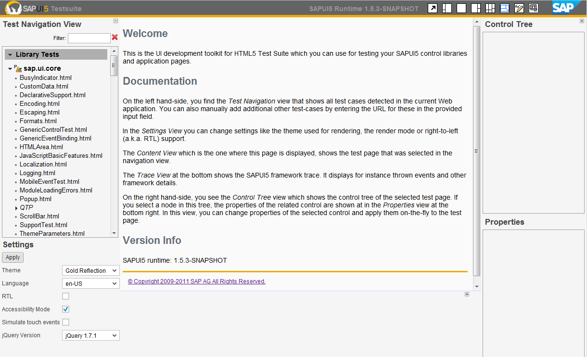

The SAPUI5 Test Suite
The Test Suite is an integral part of the SAPUI5 core library and is thus automatically available for applications using SAPUI5 . To start the Test Suite, just add the URL path 'resources/testsuite' to your application URL, like for instance ' http://localhost:8080/demokit/resources/testsuite' for the 'demokit' application.
Content of the Test Suite
The Test Suite consists of several areas providing functionality related to inspecting and trying all aspects of SAPUI5 controls:
- Left Top - the tree of test pages: different test pages for controls etc. can be selected here
- Center Top - the preview area: the page selected on the left is rendered here and can be used and tested
- Right Top - the control tree: the hierarchy of SAPUI5 controls is displayed here; you can select controls in the tree and they will be highlighted in the preview area
- Right Bottom - the property sheet: once you have selected a control in the tree above, its properties can be inspected here; they can also be modified! Click "Apply Changes" after modifying.
- Center Bottom - the event log: trace output as well as all control events go here
- Left Bottom - preview settings: here you can adjust how the page is rendered, you can e.g. select a theme from the delivered ones, but also enter the name of a theme you created.

Using the SAPUI5 DiscoveryServlet to Automatically Find Test Cases
SAPUI5 is able to detect test cases for controls automatically via its DiscoveryServlet. To use this service, the application must configure the servlet in its web.xml like this:
<!-- ============================================================= --> <!-- SAPUI5 discovery servlet used to find available UI test cases --> <!-- ============================================================= --> <servlet> <display-name>DiscoveryServlet</display-name> <servlet-name>DiscoveryServlet</servlet-name> <servlet-class>com.sap.ui5.discovery.DiscoveryServlet</servlet-class> <load-on-startup>1</load-on-startup> </servlet> <servlet-mapping> <servlet-name>DiscoveryServlet</servlet-name> <url-pattern>/discovery/*</url-pattern> </servlet-mapping>
The servlet discovers all HTML files which are located inside the test-resources/<ui-library-name> folder of the web application and all resources inside the modules (JAR files) where the location is META-INF/test-resources/<ui-library-name>.
The discovery servlet is contained in the following artefact, which needs to be added to the dependencies:
<dependency> <groupId>com.sap.ui5</groupId> <artifactId>utils</artifactId> <version>1.11.0</version> </dependency>